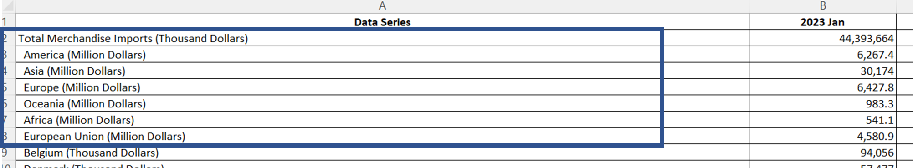
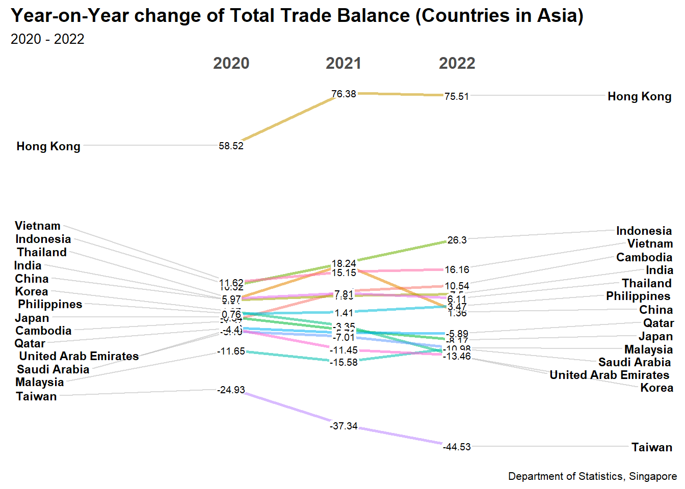

Show the code
# install.packages("remotes")
remotes::install_github("nsgrantham/ggbraid")Skipping install of 'ggbraid' from a github remote, the SHA1 (e1018d7a) has not changed since last install.
Use `force = TRUE` to force installationWith the help of analysis visualisation techniques, we are to uncover the impact of COVID-19 and the global economic and political dynamics of 2022 on Singapore’s bi-lateral trade (i.e. import, export and trade balance).
As Singaporeans, we have always been told that Singapore’s trading success is due to its naturally deep harbor and strategic location, which connects India, China, and the Indonesian archipelago.
Furthermore, as a free trader with a small and open economy that is heavily reliant on trade, Singapore is more competitive than many of its neighbors in carrying out such activities.
Therefore, we hope to learn how the influence of COVID-19 and global economic and political dynamics will affect Singapore’s bi-lateral commerce in this activity.
The dataset used for this experiment was obtained from Singstat.gov.sg and provides information on Goods Imports and Exports by Region / Market.
The study period will be from January 2020 to December 2022 for the purposes of this exercise.
Ensure following packages are installed.
# install.packages("remotes")
remotes::install_github("nsgrantham/ggbraid")Skipping install of 'ggbraid' from a github remote, the SHA1 (e1018d7a) has not changed since last install.
Use `force = TRUE` to force installationpackages = c('readxl', 'tidyr', 'lubridate','tidyverse', 'plotly', 'ggbraid','ggplot2','ggHoriPlot','directlabels')
for(p in packages){
if(!require(p,character.only = T)){
install.packages(p)
}
library(p,character.only = T)
}Loading required package: readxlLoading required package: tidyrLoading required package: lubridateLoading required package: timechange
Attaching package: 'lubridate'The following objects are masked from 'package:base':
date, intersect, setdiff, unionLoading required package: tidyverse── Attaching packages ─────────────────────────────────────── tidyverse 1.3.2 ──
✔ ggplot2 3.4.0 ✔ dplyr 1.0.10
✔ tibble 3.1.8 ✔ stringr 1.5.0
✔ readr 2.1.3 ✔ forcats 0.5.2
✔ purrr 1.0.0
── Conflicts ────────────────────────────────────────── tidyverse_conflicts() ──
✖ lubridate::as.difftime() masks base::as.difftime()
✖ lubridate::date() masks base::date()
✖ dplyr::filter() masks stats::filter()
✖ lubridate::intersect() masks base::intersect()
✖ dplyr::lag() masks stats::lag()
✖ lubridate::setdiff() masks base::setdiff()
✖ lubridate::union() masks base::union()
Loading required package: plotly
Attaching package: 'plotly'
The following object is masked from 'package:ggplot2':
last_plot
The following object is masked from 'package:stats':
filter
The following object is masked from 'package:graphics':
layout
Loading required package: ggbraid
Loading required package: ggHoriPlot
Loading required package: directlabelsFirst, we use the read_csv() function of the readr package to import the following dataset into the R environment:
Import data
Export data
Country-Region mapping data
import_T1 <- read_xlsx("C:/Users/Eda/Desktop/MITB/Y3S1/ISSS608 Visual Analytics and Applications/edachang/ISSS608-VA1/Take-Home_Ex/Take-Home_Ex04/data/outputFile.xlsx", sheet = "T1", range = "A1:AL120")
export_T2 <- read_xlsx("C:/Users/Eda/Desktop/MITB/Y3S1/ISSS608 Visual Analytics and Applications/edachang/ISSS608-VA1/Take-Home_Ex/Take-Home_Ex04/data/outputFile.xlsx", sheet = "T2", range = "A1:AL92")
regions <- read_xlsx("C:/Users/Eda/Desktop/MITB/Y3S1/ISSS608 Visual Analytics and Applications/edachang/ISSS608-VA1/Take-Home_Ex/Take-Home_Ex04/data/countries_region.xlsx")As we will only be looking at Jan 2020 to Dec 2022, we perform the following filters on the dataset.
Filter only countries dataset (remove the first 7 rows)

Remove the words in brackets (e.g. (Thousand Dollars)) from ‘Data Series’ column -> Name it as ‘Countries’
Remove ‘Data Series’ column
sgimport <- import_T1 %>%
filter(!row_number() %in% c(1:7)) %>%
mutate(Countries = str_remove(`Data Series`,
" \\(Thousand Dollars\\)"),
.after = `Data Series`) %>%
select(-`Data Series`)
sgexport <- export_T2 %>%
filter(!row_number() %in% c(1:7)) %>%
mutate(Countries = str_remove(`Data Series`,
" \\(Thousand Dollars\\)"),
.after = `Data Series`) %>%
select(-`Data Series`) Pivot_longer to transpose dates into Year & Month
Ensure that Values are numeric
Remove Year 2023 to ensure that the dataset runs from January 2020 to December 2022
sgimport_pivot <- sgimport %>%
pivot_longer(cols = !Countries,
names_to = c("Year", "Month"),
names_sep = " ",
values_to = "ImportSGD"
) %>%
mutate(Month = factor(Month, levels = month.abb),
Year = as.integer(Year),
MonthYear = make_date(Year, Month),
.before = 1) %>%
mutate(ImportSGD = ImportSGD*1000)
sgexport_pivot <- sgexport %>%
pivot_longer(cols = !Countries,
names_to = c("Year", "Month"),
names_sep = " ",
values_to = "ExportSGD"
) %>%
mutate(Month = factor(Month, levels = month.abb),
Year = as.integer(Year),
MonthYear = make_date(Year, Month),
.before = 1) %>%
mutate(ExportSGD = ExportSGD*1000)
# Convert ImportValue column to numeric format
sgimport_pivot$'ImportSGD' <- as.numeric(sgimport_pivot$'ImportSGD')
sgexport_pivot$'ExportSGD' <- as.numeric(sgexport_pivot$'ExportSGD')
sgimport_pivot<-subset(sgimport_pivot, Year!="2023")
sgexport_pivot<-subset(sgexport_pivot, Year!="2023")Left join both Import and Export dataset into one dataset
Manually clean the following countries to match with Regions
Create 2 columns - ‘Trade Balance’ and ‘Trade Volume’
Drop any na in ‘Trade Balance’ column
Remove ‘Other countries in Oceania’ for better comparison across countries instead of aggregated countries in oceania
sgtrade_joined <- sgimport_pivot %>%
left_join(sgexport_pivot, by = c('Countries' = 'Countries', 'MonthYear' = 'MonthYear', 'Month' = 'Month', 'Year' = 'Year')) %>%
mutate(Countries = case_when(Countries == "Germany, Federal Republic Of" ~ "Germany",
Countries == "Vietnam, Socialist Republic Of" ~ "Vietnam",
Countries == "Germany, Democratic Republic Of" ~ "Germany",
Countries == "Maldives, Republic Of" ~ "Maldives",
Countries == "Laos People's Democratic Republic" ~ "Laos",
Countries == "Republic Of Korea"~"Korea",
Countries == "Brunei Darussalam"~"Brunei",
Countries == "Iran (Islamic Republic Of)" ~ "Iran",
Countries == "Republic Of Korea" ~ "South Korea",
Countries == "Mainland China" ~ "China",
Countries == "Slovak Republic (Slovakia)"~"Slovak Republic",
Countries == "Yemen Democratic" ~ "Yemen",
TRUE ~ Countries)) %>%
mutate(TradeBalance_SGD = ExportSGD - ImportSGD,
TradeVolume_SGD = ExportSGD + ImportSGD)
sgtrade_joined <- sgtrade_joined %>% drop_na(TradeBalance_SGD)
sgtrade_joined<-subset(sgtrade_joined, Countries!="Other Countries In Oceania")Group by Month & Year across all countries
Transpose Export & Import into one column
totalsgtrade <- sgtrade_joined %>%
group_by(MonthYear, Year) %>%
summarise(Import = sum(ImportSGD),
Export = sum(ExportSGD))`summarise()` has grouped output by 'MonthYear'. You can override using the
`.groups` argument.totalsgtrade_pivot <- totalsgtrade %>%
pivot_longer(cols = !c(MonthYear, Year),
names_to = "Type",
values_to = "Values")sgtrade_joined_countryyear <- sgtrade_joined %>%
group_by(Countries, Year) %>%
summarise(TotalTradeBalance_BSGD = round(sum(TradeBalance_SGD)/1000000000, 2),
TotalTradeVolume_BSGD = round(sum(TradeVolume_SGD)/1000000000, 2),
TotalImport_BSGD = round(sum(ImportSGD)/1000000000, 2),
TotalExport_BSGD = round(sum(ExportSGD)/1000000000, 2))`summarise()` has grouped output by 'Countries'. You can override using the
`.groups` argument.sgtrade_joined_countryyear$Year <- as.character(sgtrade_joined_countryyear$Year)Find the top 15 countries for each region
sgtrade_joined_countryyear <- sgtrade_joined_countryyear %>%
left_join(regions, by = c('Countries' = 'Country'))sgtrade_joined_countryyear_Asia <- subset(sgtrade_joined_countryyear, Region=="Asia")sgtrade_joined_countryyear_Asia_top15 <- sgtrade_joined_countryyear_Asia %>%
select(Countries, TotalTradeVolume_BSGD) %>%
group_by(Countries) %>%
summarise(sum_TotalVol = sum(TotalTradeVolume_BSGD),
.groups = 'drop') %>%
arrange(desc(sum_TotalVol)) %>%
slice(0:15)
sgtrade_joined_countryyear_Asia_top15# A tibble: 15 × 2
Countries sum_TotalVol
<chr> <dbl>
1 China 475.
2 Malaysia 385.
3 Taiwan 289.
4 Hong Kong 238.
5 Indonesia 184.
6 Korea 172.
7 Japan 169.
8 Thailand 109.
9 Vietnam 80.9
10 India 77.4
11 Philippines 69.4
12 United Arab Emirates 64.9
13 Saudi Arabia 32.4
14 Cambodia 26.0
15 Qatar 21.7top_15_asiacountries <- c("China","Malaysia","Taiwan","Hong Kong","Indonesia","Korea","Japan","Thailand","Vietnam","India","Philippines","United Arab Emirates","Saudi Arabia","Cambodia","Qatar")
sgtrade_joined_countryyear_Asia <- sgtrade_joined_countryyear_Asia %>%
filter(Countries %in% top_15_asiacountries)sgtrade_joined_region <- sgtrade_joined %>%
left_join(regions, by = c('Countries' = 'Country'))totalsgtrade_asia <- subset(sgtrade_joined_region, Region=="Asia")
totalsgtrade_asia <- totalsgtrade_asia %>%
filter(Countries %in% top_15_asiacountries)totalsgtrade_asia <- totalsgtrade_asia %>%
group_by(MonthYear, Year, Countries) %>%
summarise(Import = sum(ImportSGD),
Export = sum(ExportSGD))`summarise()` has grouped output by 'MonthYear', 'Year'. You can override using
the `.groups` argument.totalsgtrade_pivot_asia <- totalsgtrade_asia %>%
pivot_longer(cols = !c(MonthYear, Year, Countries),
names_to = "Type",
values_to = "Values")totalsgtrade_asia_tradebalance <- subset(sgtrade_joined_region, Region=="Asia")sgtrade_joined_countryyear_America <- subset(sgtrade_joined_countryyear, Region=="America")sgtrade_joined_countryyear_America_top15 <- sgtrade_joined_countryyear_America %>%
select(Countries, TotalTradeVolume_BSGD) %>%
group_by(Countries) %>%
summarise(sum_TotalVol = sum(TotalTradeVolume_BSGD),
.groups = 'drop') %>%
arrange(desc(sum_TotalVol)) %>%
slice(0:15)
sgtrade_joined_countryyear_America_top15# A tibble: 14 × 2
Countries sum_TotalVol
<chr> <dbl>
1 United States 341.
2 Brazil 26.2
3 Mexico 16.6
4 Canada 11.5
5 Puerto Rico 3.92
6 Guam 1.52
7 Colombia 1.1
8 Argentina 1.06
9 Chile 1.04
10 Ecuador 0.5
11 Peru 0.44
12 Uruguay 0.26
13 Paraguay 0.03
14 Venezuela 0.02top_15_americacountries <- c("United States","Brazil","Mexico","Canada","Puerto Rico","Guam","Colombia","Argentina","Chile","Ecuador","Peru","Uruguay","Paraguay","Venezuela")
sgtrade_joined_countryyear_America <- sgtrade_joined_countryyear_America %>%
filter(Countries %in% top_15_americacountries)totalsgtrade_america <- subset(sgtrade_joined_region, Region=="America")
totalsgtrade_america <- totalsgtrade_america %>%
filter(Countries %in% top_15_americacountries)totalsgtrade_america <- totalsgtrade_america %>%
group_by(MonthYear, Year, Countries) %>%
summarise(Import = sum(ImportSGD),
Export = sum(ExportSGD))`summarise()` has grouped output by 'MonthYear', 'Year'. You can override using
the `.groups` argument.totalsgtrade_pivot_america <- totalsgtrade_america %>%
pivot_longer(cols = !c(MonthYear, Year, Countries),
names_to = "Type",
values_to = "Values")totalsgtrade_america_tradebalance <- subset(sgtrade_joined_region, Region=="America")sgtrade_joined_countryyear_Europe <- subset(sgtrade_joined_countryyear, Region=="Europe")sgtrade_joined_countryyear_Europe_top15 <- sgtrade_joined_countryyear_Europe %>%
select(Countries, TotalTradeVolume_BSGD) %>%
group_by(Countries) %>%
summarise(sum_TotalVol = sum(TotalTradeVolume_BSGD),
.groups = 'drop') %>%
arrange(desc(sum_TotalVol)) %>%
slice(0:15)
sgtrade_joined_countryyear_Europe_top15# A tibble: 15 × 2
Countries sum_TotalVol
<chr> <dbl>
1 Germany 68.1
2 France 63.2
3 Netherlands 54.1
4 Switzerland 47.1
5 United Kingdom 46.2
6 Belgium 27.7
7 Italy 22.8
8 Ireland 8.3
9 Malta 7.87
10 Spain 7.47
11 Sweden 6.24
12 Greece 5.6
13 Czech Republic 4.6
14 Austria 4.45
15 Denmark 3.85top_15_europecountries <- c("Germany", "France", "Netherlands", "Switzerland", "United Kingdom", "Belgium", "Italy", "Ireland", "Malta", "Spain","Sweden","Greece","Czech Republic","Austria","Denmark")
sgtrade_joined_countryyear_Europe <- sgtrade_joined_countryyear_Europe %>%
filter(Countries %in% top_15_europecountries)totalsgtrade_europe <- subset(sgtrade_joined_region, Region=="Europe")
totalsgtrade_europe <- totalsgtrade_europe %>%
filter(Countries %in% top_15_europecountries)totalsgtrade_europe <- totalsgtrade_europe %>%
group_by(MonthYear, Year, Countries) %>%
summarise(Import = sum(ImportSGD),
Export = sum(ExportSGD))`summarise()` has grouped output by 'MonthYear', 'Year'. You can override using
the `.groups` argument.totalsgtrade_pivot_europe <- totalsgtrade_europe %>%
pivot_longer(cols = !c(MonthYear, Year, Countries),
names_to = "Type",
values_to = "Values")totalsgtrade_europe_tradebalance <- subset(sgtrade_joined_region, Region=="Europe")sgtrade_joined_countryyear_oceania <- subset(sgtrade_joined_countryyear, Region=="Oceania")sgtrade_joined_countryyear_oceania_top15 <- sgtrade_joined_countryyear_oceania %>%
select(Countries, TotalTradeVolume_BSGD) %>%
group_by(Countries) %>%
summarise(sum_TotalVol = sum(TotalTradeVolume_BSGD),
.groups = 'drop') %>%
arrange(desc(sum_TotalVol)) %>%
slice(0:15)
sgtrade_joined_countryyear_oceania_top15# A tibble: 5 × 2
Countries sum_TotalVol
<chr> <dbl>
1 Australia 80.2
2 New Zealand 14.4
3 Papua New Guinea 3.88
4 Fiji 1.36
5 Solomon Islands 0.24top_15_oceaniacountries <- c("Australia","New Zealand","Papua New Guinea","Fiji","Solomon Islands")
sgtrade_joined_countryyear_oceania <- sgtrade_joined_countryyear_oceania %>%
filter(Countries %in% top_15_oceaniacountries)totalsgtrade_oceania <- subset(sgtrade_joined_region, Region=="Oceania")
totalsgtrade_oceania <- totalsgtrade_oceania %>%
filter(Countries %in% top_15_oceaniacountries)totalsgtrade_oceania <- totalsgtrade_oceania %>%
group_by(MonthYear, Year, Countries) %>%
summarise(Import = sum(ImportSGD),
Export = sum(ExportSGD))`summarise()` has grouped output by 'MonthYear', 'Year'. You can override using
the `.groups` argument.totalsgtrade_pivot_oceania <- totalsgtrade_oceania %>%
pivot_longer(cols = !c(MonthYear, Year, Countries),
names_to = "Type",
values_to = "Values")totalsgtrade_oceania_tradebalance <- subset(sgtrade_joined_region, Region=="Oceania")In a calendar heatmap, colored cells show the number of events for each period of time. Heatmaps are used to identify seasonal patterns and anomalies in data and enable users to identify these patterns quickly. The heatmap uses colors and saturation to represent data values, so users can easily identify the high and low values based on color intensity in the heatmap.
totalsgtrade_calmap <- totalsgtrade %>%
mutate(Month = factor(format(MonthYear,"%b")), .after = Year) %>%
mutate(Trade_Balance = (Export - Import)/1000000000,
Trade_Volumes = (Export + Import)/1000000000)
sgtrade_calmap <- sgtrade_joined %>%
mutate(Trade_Balance = TradeBalance_SGD/1000000000)
sgtrade_calmap$Countries <- fct_reorder(sgtrade_calmap$Countries, sgtrade_calmap$TradeVolume_SGD, .desc = TRUE)Here, we are plotting the total trade volume over the years & months.
#Plotting the base plot
ggplot(totalsgtrade_calmap %>%
mutate(Year = factor(Year, levels =c(2022,2021,2020))),
aes(x = Month,
y = Year,
fill = Trade_Volumes)) +
geom_tile(color = "white") +
#Setting the colors for the main plot
scale_fill_gradient(name = "Trade Volume (Billions SGD)",
low = "#fc8d59",
high = "#5ab4ac") +
coord_equal() +
theme(axis.ticks = element_blank(),
legend.title = element_text(size = 8),
legend.text = element_text(size = 6),
plot.title = element_text(face = "bold")) +
labs(x = NULL,
y = NULL,
title = "Singapore Trade Volume by calendar months, 2020-2022",
caption = "Department of Statistics, Singapore") Insights
We observe the following:
The top 3 lowest trade volume happened in Apr - Jun 2020 –> This coincides with the economic slowdown in major economies and supply chain disruptions as well as the implementation of the circuit Breaker (CB) measures domestically from April to June 2020.
Singapore trade volume continue to increase from Mar 2021 onwards due to relaxation of covid-restrictions. This is observed by green (high trade volumes) from Mar - Sep 2022. In Oct 2022, there is a slowdown due to recession.
#Plotting the base plot
ggplot(totalsgtrade_calmap %>%
mutate(Year = factor(Year, levels =c(2022,2021,2020))),
aes(x = Month,
y = Year,
fill = Trade_Balance)) +
geom_tile(color = "white") +
#Setting the colors for the main plot
scale_fill_gradientn(name = "Trade Balance (Billions SGD)",
colors=c("#fc8d59","grey90","#5ab4ac"),
limits=c(min(totalsgtrade_calmap$Trade_Balance),max(totalsgtrade_calmap$Trade_Balance))) +
coord_equal() +
theme(axis.ticks = element_blank(),
legend.title = element_text(size = 8),
legend.text = element_text(size = 6),
plot.title = element_text(face = "bold")) +
labs(x = NULL,
y = NULL,
title = "Singapore Trade Balance by calendar months, 2020-2022",
caption = "Department of Statistics, Singapore") 
Insights
We observe the following:
Across all three years, Singapore exports more than it imports, which may be attributed to its strategic location.
Imports exceed exports in May 2022, resulting in a negative trade balance. The same pattern could be seen in April-August 2022 and October-December 2022. This could be because, as the United States enters a recession (Summer 2022 & Oct 2022), Singapore is not immune, and the world economy enters a slump, with fewer exports. While Singapore continues to import, which is understandable given the country’s scarcity of natural resources.
The difference between a country’s exports and imports for a certain period is known as the balance of trade (BOT). A country with a trade deficit imports more products and services than it exports in terms of value, whereas a country with a trade surplus exports more goods and services than it imports.
We utilize a horizon graph to show Singapore’s trade balance trend over the last three years, broken down by region. Each row represents a different country, with red representing a trade deficit and blue representing a trade surplus.
Insights
We can examine the main importers/exporters and trading activities of trading partners over time. We also observe that there is less trading activity with countries in America and Europe. Singapore primarily trades in Asia Pacific, possibly due to proximity.
In Asia, we mostly export (blue) to Hong Kong, Indonesia, and Vietnam. We primarily import (red) from Malaysia and Taiwan.
In the United States, we mostly export (blue) to Guam and Puerto Rico. While we mostly import (red) from the United States, we also import from Brazil.
In Europe, we mostly export (blue) to the Netherlands and Greece. While we mostly import (red) from Italy, Spain, Sweden, Switzerland, and the United Kingdom. This could be because of free trade agreements with the European Union.
We mostly export to countries in Oceania.
What is noteworthy about this analysis is that we observe that we often export to smaller countries while importing from larger countries. This could be due to Singapore’s many bilateral and regional FTAs including with Australia, China, Costa Rica, India, Japan, Jordan, New Zealand, Republic of Korea, Panama, Peru, Sri Lanka, European Union, United Kingdom and Turkey.
::: panel-tabset
Warning: Using the `size` aesthetic in this geom was deprecated in ggplot2 3.4.0.
ℹ Please use `linewidth` in the `default_aes` field and elsewhere instead.

ggplot(data=totalsgtrade_oceania_tradebalance) +
geom_horizon(aes(x=MonthYear, y=TradeBalance_SGD),
origin = 0,
horizonscale = 6)+
facet_grid(Countries~.) +
scale_fill_hcl(palette = 'RdBu') +
theme(panel.spacing.y=unit(0, "lines"),
strip.text.y = element_text(size = 8, angle = 0, hjust = 0),
legend.position = "none",
axis.text.y = element_blank(),
axis.text.x = element_text(size=6.5, angle = 0, hjust=0.5),
axis.title.y = element_blank(),
axis.title.x = element_blank(),
axis.ticks.y = element_blank(),
panel.border = element_blank(),
plot.title = element_text(size=13, face="bold")) +
scale_x_date(expand=c(0,0), date_breaks = "2 month", date_labels = "%b'%y") +
labs(title = 'Singapore Quarterly Trade Balance with countries in Oceania region (2020-2022)',
caption="Department of Statistics, Singapore")
Plotting both export and import line into the same graph allows us to examine Singapore’s exports and imports easier over time. The user can easily determine whether each country’s trade activities are in surplus (green) or deficit (purple).
Insights
Singapore has experienced a trade surplus for the last three years, as shown in the green region, which is more than the purple area. The result is consistent with the trade summary from World Bank.org. This was also evident in the heatmap, which showed a low trade balance in May 2022. Trade activity falls sharply between February 2020 and December 2021. The drop in February 2020 was caused by Covid-19 shutdown restrictions and a standstill in global economic activity, during which the Singapore economy experienced both demand- and supply-side disruptions. Whereas the second drop in trade activity in December 2021 could be related to the uncertainty of Russia invading Ukraine. The decrease continued until February 2022, when the Russia-Ukraine war begin. On the other hand, imports and exports increased in March 2021 which could be due to easing of Covid restrictions.
Similar patterns can be found in different regions, as evidenced by the Trade Balance, where trade activity are lower in countries in America and higher in Asia. It’s worth noting that several countries had a mix of trade surpluses and trade deficits (e.g. Korea, China, US). For example, exports to China increased from July 2020 to April 2022, which might be linked to the pandemic and China’s strict zero covid policy, which delayed China’s opening and consequently lowered imports.
#Plotting the base plot
exim_plot <- ggplot() +
geom_line(data = totalsgtrade_pivot,
aes(x = MonthYear,
y = Values,
group = Type,
color = Type),
linewidth = 1) +
geom_braid(data = totalsgtrade,
aes(x = MonthYear,
ymin = Import,
ymax = Export,
fill = Import < Export),
alpha = 0.5) +
#Remove the legend
guides(linetype = "none", fill = "none") +
#Adding the 'Import' and 'Export' labels at the end of the line charts
geom_dl(data = totalsgtrade_pivot,
aes(x = MonthYear,
y = Values,
label = Type,
color = Type),
method = list(dl.trans(x = x + 0.2), "last.points", cex = 1)) +
geom_dl(data = totalsgtrade_pivot,
aes(x = MonthYear,
y = Values,
label = Type,
color = Type),
method = list(dl.trans(x = x - 0.2), "first.points", cex = 1)) +
#Setting the colors for the main plot
scale_color_manual(values = c("#7fbf7b", "#af8dc3"),
labels = c("Export", "Import"),
name = NULL,
guide = "none") +
scale_fill_manual(values = c("#cbd5e8", "#B6DAB4")) +
#Adjusting the scale
scale_x_date(expand = c(0,0),
limits = c(as.Date("2020-01-01"),as.Date("2023-03-31")),
date_breaks = "3 month",
date_labels = "%b %Y") +
scale_y_continuous("Trade Values",
labels = function(x){paste0('$', abs(x/1000000000),'B')}) +
theme(axis.title.x = element_blank(),
axis.text.x = element_text(angle = 45, hjust = 1),
legend.position = 'top',
legend.justification = 'center',
panel.grid.major.y = element_blank()) +
#Adding title, subtitle, and captions
labs(title = "Singapore overall trade activities",
subtitle = "2020-2022",
caption = "Department of Statistics, Singapore")
exim_plot`geom_braid()` using method = 'line'#Plotting the base plot
exim_plot_asia <- ggplot() +
geom_line(data = totalsgtrade_pivot_asia,
aes(x = MonthYear,
y = Values,
group = Type,
color = Type),
linewidth = 1) +
geom_braid(data = totalsgtrade_asia,
aes(x = MonthYear,
ymin = Import,
ymax = Export,
fill = Import < Export),
alpha = 0.5) +
#Remove the legend
guides(linetype = "none", fill = "none") +
facet_wrap(~Countries, ncol = 5) +
#Setting the colors for the main plot
scale_color_manual(values = c("#7fbf7b", "#af8dc3"),
labels = c("Export", "Import"),
name = NULL,
guide = "none") +
scale_fill_manual(values = c("#cbd5e8", "#B6DAB4")) +
#Adjusting the scale
scale_x_date(expand = c(0,0),
limits = c(as.Date("2020-01-01"),as.Date("2023-03-31")),
date_breaks = "3 month",
date_labels = "%b %Y") +
scale_y_continuous("Trade Values",
labels = function(x){paste0('$', abs(x/1000000000),'B')}) +
theme(axis.title.x = element_blank(),
axis.text.x = element_text(angle = 45, hjust = 1),
legend.position = 'top',
legend.justification = 'center',
panel.grid.major.y = element_blank()) +
#Adding title, subtitle, and captions
labs(title = "Asia-Singapore trade activities",
subtitle = "2020-2022",
caption = "Note: The shaded green area represents Export value > Import value, indicating a trade surplus. \n The shaded purple area represents Export value < Import value, indicating a trade deficit.") +
theme(
axis.title = element_text(size=8),
axis.text.x = element_text(size=6, angle=45, hjust = 1)
)
exim_plot_asia`geom_braid()` using method = 'line'
#Plotting the base plot
exim_plot_america <- ggplot() +
geom_line(data = totalsgtrade_pivot_america,
aes(x = MonthYear,
y = Values,
group = Type,
color = Type),
linewidth = 1) +
geom_braid(data = totalsgtrade_america,
aes(x = MonthYear,
ymin = Import,
ymax = Export,
fill = Import < Export),
alpha = 0.5) +
#Remove the legend
guides(linetype = "none", fill = "none") +
facet_wrap(~Countries, ncol = 5) +
#Setting the colors for the main plot
scale_color_manual(values = c("#7fbf7b", "#af8dc3"),
labels = c("Export", "Import"),
name = NULL,
guide = "none") +
scale_fill_manual(values = c("#cbd5e8", "#B6DAB4")) +
#Adjusting the scale
scale_x_date(expand = c(0,0),
limits = c(as.Date("2020-01-01"),as.Date("2023-03-31")),
date_breaks = "3 month",
date_labels = "%b %Y") +
scale_y_continuous("Trade Values",
labels = function(x){paste0('$', abs(x/1000000000),'B')}) +
theme(axis.title.x = element_blank(),
axis.text.x = element_text(angle = 45, hjust = 1),
legend.position = 'top',
legend.justification = 'center',
panel.grid.major.y = element_blank()) +
#Adding title, subtitle, and captions
labs(title = "America-Singapore trade activities",
subtitle = "2020-2022",
caption = "Note: The shaded green area represents Export value > Import value, indicating a trade surplus. \n The shaded purple area represents Export value < Import value, indicating a trade deficit.") +
theme(
axis.title = element_text(size=8),
axis.text.x = element_text(size=6, angle=45, hjust = 1)
)
exim_plot_america`geom_braid()` using method = 'line'#Plotting the base plot
exim_plot_europe <- ggplot() +
geom_line(data = totalsgtrade_pivot_europe,
aes(x = MonthYear,
y = Values,
group = Type,
color = Type),
linewidth = 1) +
geom_braid(data = totalsgtrade_europe,
aes(x = MonthYear,
ymin = Import,
ymax = Export,
fill = Import < Export),
alpha = 0.5) +
#Remove the legend
guides(linetype = "none", fill = "none") +
facet_wrap(~Countries, ncol = 5) +
#Setting the colors for the main plot
scale_color_manual(values = c("#7fbf7b", "#af8dc3"),
labels = c("Export", "Import"),
name = NULL,
guide = "none") +
scale_fill_manual(values = c("#cbd5e8", "#B6DAB4")) +
#Adjusting the scale
scale_x_date(expand = c(0,0),
limits = c(as.Date("2020-01-01"),as.Date("2023-03-31")),
date_breaks = "3 month",
date_labels = "%b %Y") +
scale_y_continuous("Trade Values",
labels = function(x){paste0('$', abs(x/1000000000),'B')}) +
theme(axis.title.x = element_blank(),
axis.text.x = element_text(angle = 45, hjust = 1),
legend.position = 'top',
legend.justification = 'center',
panel.grid.major.y = element_blank()) +
#Adding title, subtitle, and captions
labs(title = "Europe-Singapore trade activities",
subtitle = "2020-2022",
caption = "Note: The shaded green area represents Export value > Import value, indicating a trade surplus. \n The shaded purple area represents Export value < Import value, indicating a trade deficit.") +
theme(
axis.title = element_text(size=8),
axis.text.x = element_text(size=6, angle=45, hjust = 1)
)
exim_plot_europe`geom_braid()` using method = 'line'
#Plotting the base plot
exim_plot_oceania <- ggplot() +
geom_line(data = totalsgtrade_pivot_oceania,
aes(x = MonthYear,
y = Values,
group = Type,
color = Type),
linewidth = 1) +
geom_braid(data = totalsgtrade_oceania,
aes(x = MonthYear,
ymin = Import,
ymax = Export,
fill = Import < Export),
alpha = 0.5) +
#Remove the legend
guides(linetype = "none", fill = "none") +
facet_wrap(~Countries, ncol = 5) +
#Setting the colors for the main plot
scale_color_manual(values = c("#7fbf7b", "#af8dc3"),
labels = c("Export", "Import"),
name = NULL,
guide = "none") +
scale_fill_manual(values = c("#cbd5e8", "#B6DAB4")) +
#Adjusting the scale
scale_x_date(expand = c(0,0),
limits = c(as.Date("2020-01-01"),as.Date("2023-03-31")),
date_breaks = "3 month",
date_labels = "%b %Y") +
scale_y_continuous("Trade Values",
labels = function(x){paste0('$', abs(x/1000000000),'B')}) +
theme(axis.title.x = element_blank(),
axis.text.x = element_text(angle = 45, hjust = 1),
legend.position = 'top',
legend.justification = 'center',
panel.grid.major.y = element_blank()) +
#Adding title, subtitle, and captions
labs(title = "Oceania-Singapore trade activities",
subtitle = "2020-2022",
caption = "Note: The shaded green area represents Export value > Import value, indicating a trade surplus. \n The shaded purple area represents Export value < Import value, indicating a trade deficit.") +
theme(
axis.title = element_text(size=8),
axis.text.x = element_text(size=6, angle=45, hjust = 1)
)
exim_plot_oceania`geom_braid()` using method = 'line'
The Slopegraph depicts the year-on-year trend of these countries’ total trade balance with Singapore. It is more intuitive for users as the slope-up/slope-down of the lines shows the increase/decrease in trade balance. Here we are only plotting the top 15 trade volume in each region.
In Asia, we can see that Hong Kong remains the top exporter of Singapore year on year (increasing trend). While Taiwan remains the top importer of Singapore year on year (decreasing trend).
In America, it is interesting to note that United States turned from trade surplus in 2020 to trade deficit in 2021 and 2022.
In Europe, most countries seems to be quite stable across the years and with more countries with trade deficit, this could be due to the ongoing European Union-Singapore Free Trade Agreement and the hit in resources from Russia-Ukraine war which meant more imports from Singapore.
In Oceania, it is interesting to see that we are exporting more to Australia & New Zealand over the years.
CGPfunctions::newggslopegraph(dataframe = sgtrade_joined_countryyear_Asia,
Year, TotalTradeBalance_BSGD, Countries,
Title = "Year-on-Year change of Total Trade Balance (Countries in Asia)",
SubTitle = "2020 - 2022",
Caption = "Department of Statistics, Singapore")
CGPfunctions::newggslopegraph(dataframe = sgtrade_joined_countryyear_America,
Year, TotalTradeBalance_BSGD, Countries,
Title = "Year-on-Year change of Total Trade Balance (Countries in America)",
SubTitle = "2020 - 2022",
Caption = "Department of Statistics, Singapore")
CGPfunctions::newggslopegraph(dataframe = sgtrade_joined_countryyear_Europe,
Year, TotalTradeBalance_BSGD, Countries,
Title = "Year-on-Year change of Total Trade Balance (Countries in Europe)",
SubTitle = "2020 - 2022",
Caption = "Department of Statistics, Singapore")
CGPfunctions::newggslopegraph(dataframe = sgtrade_joined_countryyear_oceania,
Year, TotalTradeBalance_BSGD, Countries,
Title = "Year-on-Year change of Total Trade Balance (Countries in Oceania)",
SubTitle = "2020 - 2022",
Caption = "Department of Statistics, Singapore")Enterprise singapore – growing enterprises. Enterprise Singapore â Growing Enterprises. (n.d.). Retrieved February 26, 2023, from https://www.enterprisesg.gov.sg/
Grantham, N. (n.d.). Braid ribbons in GGPLOT2. Braid Ribbons in ggplot2. Retrieved February 26, 2023, from https://nsgrantham.github.io/ggbraid/
Multilateral & Regional Forums. MTI. (n.d.). Retrieved February 26, 2023, from https://www.mti.gov.sg/Trade/Multilateral-and-Regional-Forums
Singapore - Trade Agreements. International Trade Administration | Trade.gov. (n.d.). Retrieved February 26, 2023, from https://www.trade.gov/country-commercial-guides/singapore-trade-agreements#:~:text=Singapore%20also%20has%20many%20bilateral,Union%2C%20United%20Kingdom%20and%20Turkey.
Singapore ExportsJanuary 2023 Data - 1964-2022 historical - February forecast. Singapore Exports - January 2023 Data - 1964-2022 Historical - February Forecast. (n.d.). Retrieved February 26, 2023, from https://tradingeconomics.com/singapore/exports
Singapore International Trade. Base. (n.d.). Retrieved February 26, 2023, from https://www.singstat.gov.sg/modules/infographics/singapore-international-trade